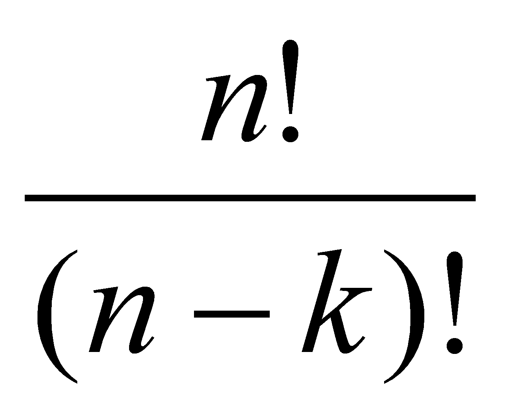

Valószínűség számítás
A matematikai alapok elméleti kiterjesztése, modellek és algoritmusok fejlesztése, használata

- Matematikai modell, alapfogalmak
- Valószínûségi változó
- Véletlen vektorok
- Minta, alapstatisztikák
- Becsléselmélet
- Hipotézisvizsgálat
- Többdimenziós normális eloszlás
- Regresszió
- Robusztus statisztika
- Szimuláció
- Elemzés a Statistica szotverrel
- Ellenõrzõ feladatok